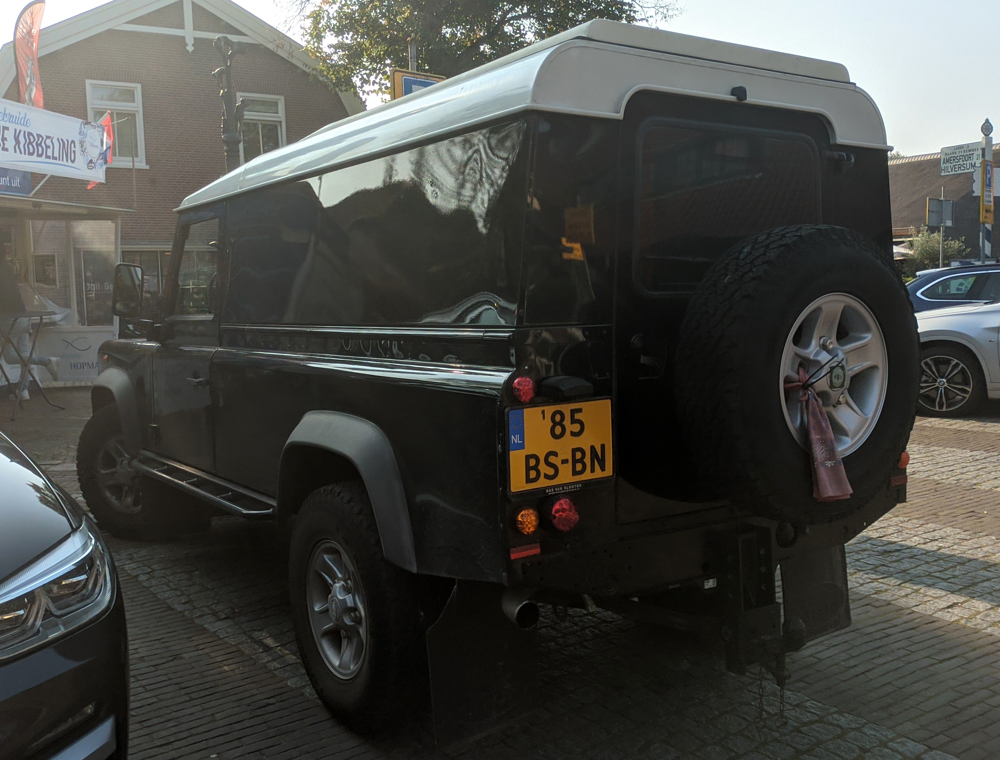
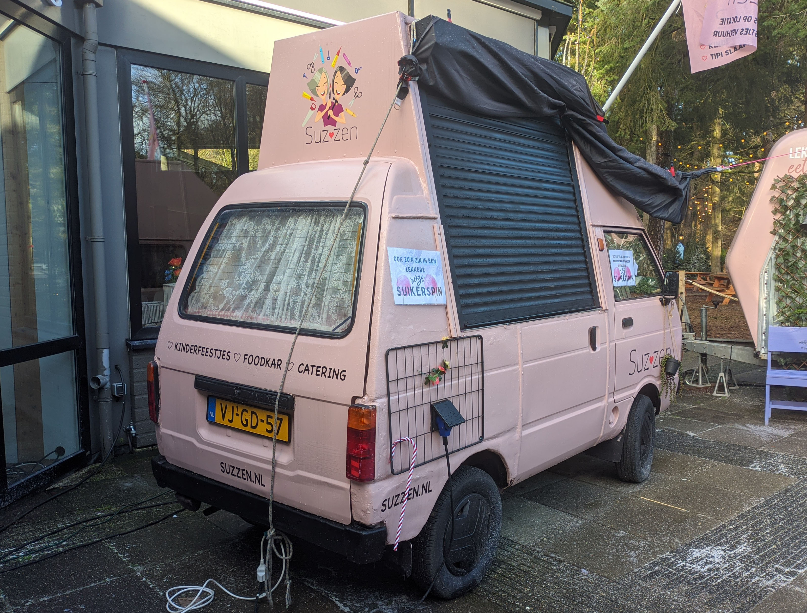
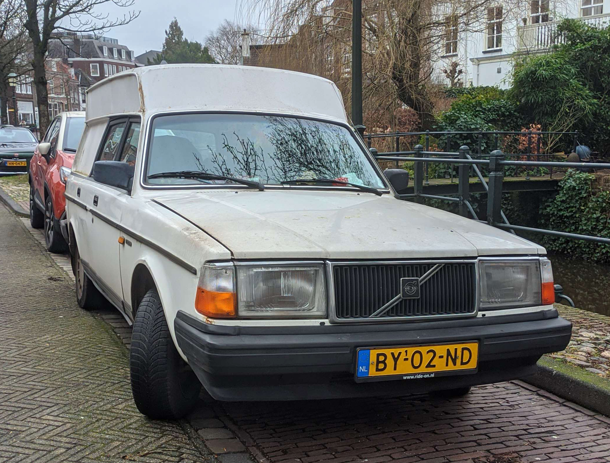
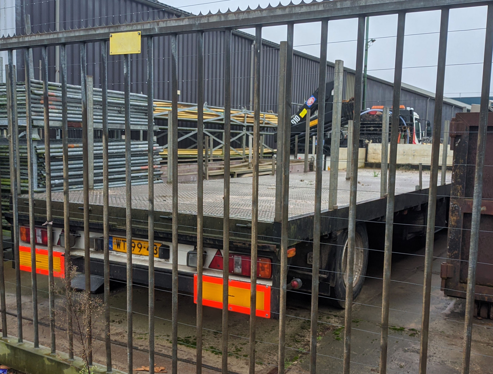
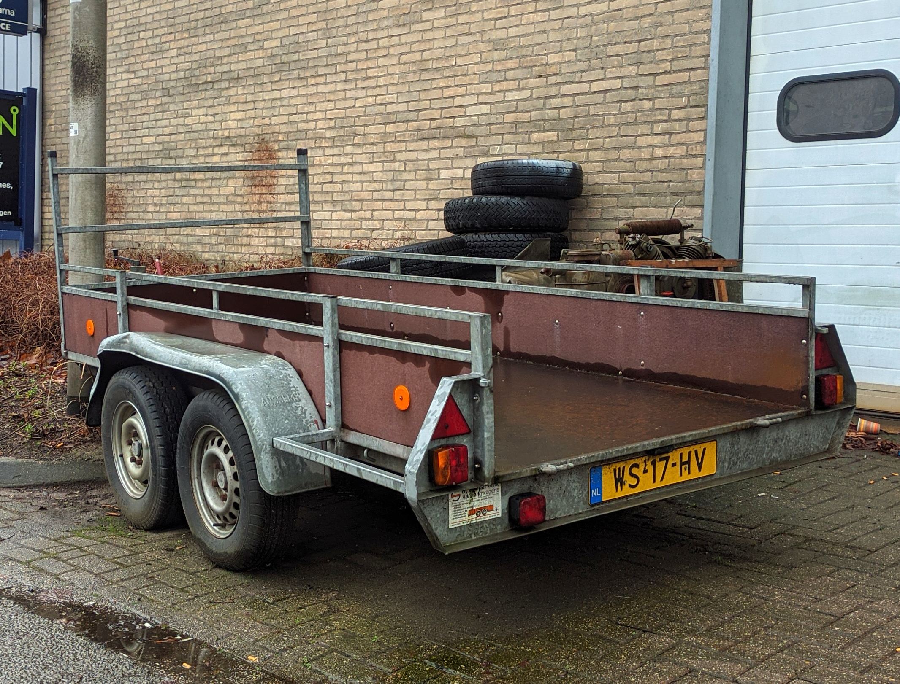
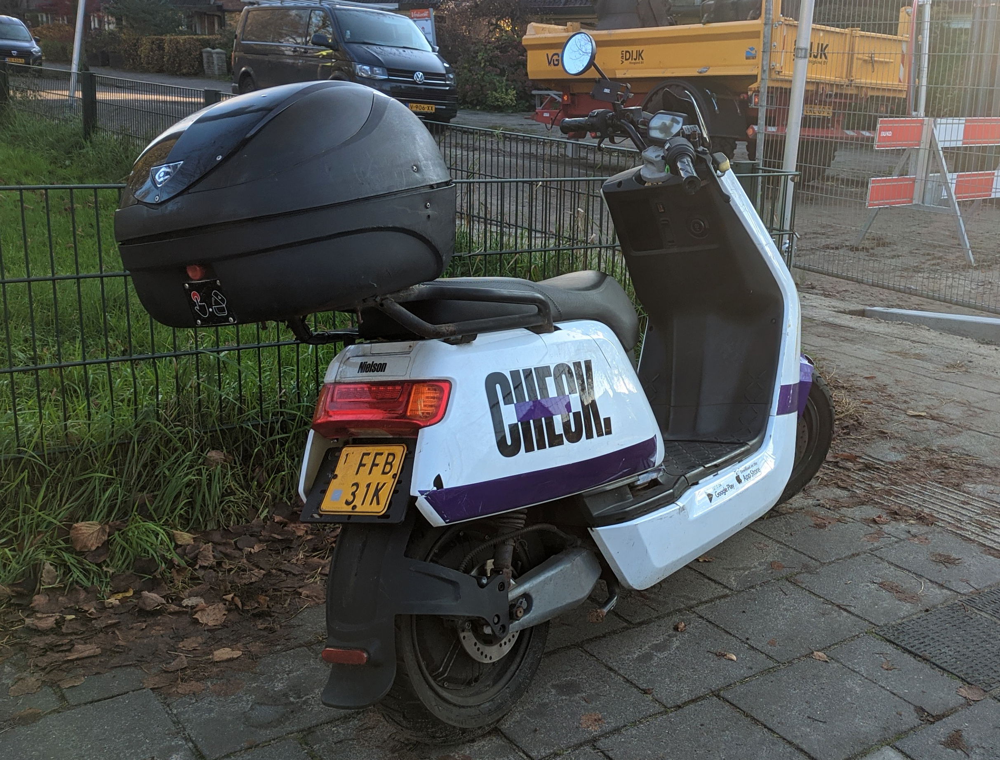
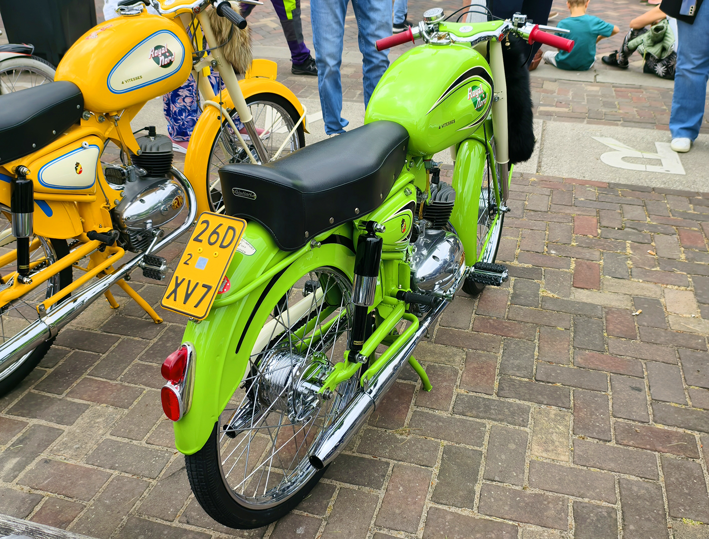
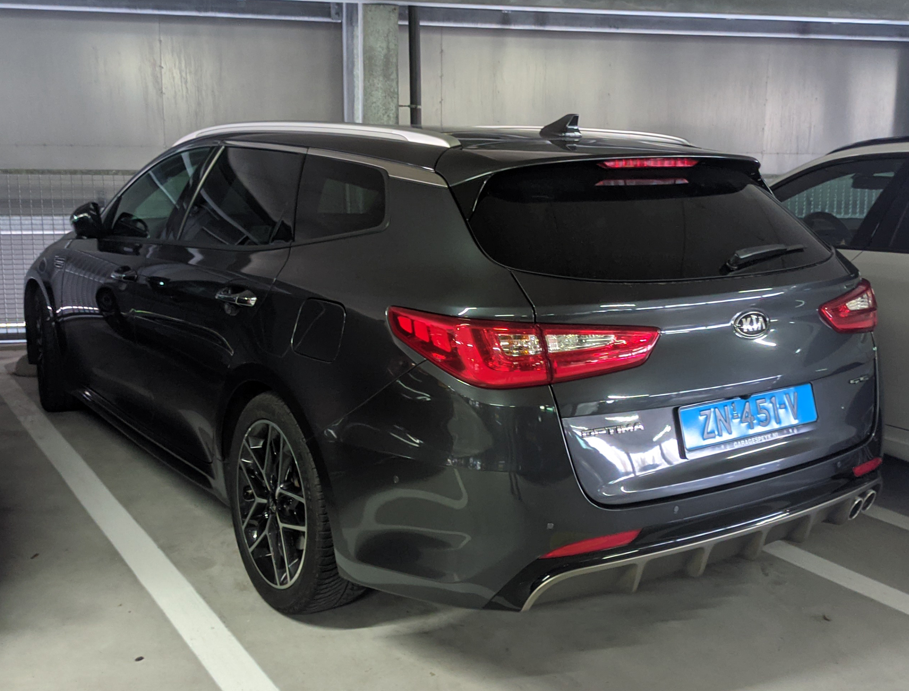

License Plates of The Netherlands (NL)
Photographed in The Netherlands


Sidecode 6. Light Commercial Vehicle Series. First letter B or V = Commercial vehicle lighter than 3500kg. Small 1 means this is the first replacement plate.


Sidecode 6. Light Commercial Vehicle Series. First letter B or V = Commercial vehicle lighter than 3500kg. Small 1 means this is the first replacement plate.


Sidecode 6. Light Commercial Vehicle Series. First letter B or V = Commercial vehicle lighter than 3500kg. Small 1 means this is the first replacement plate.


Sidecode 4. Commercial Vehicle Series. B = Commercial Vehicle. Small 1 means this is the first replacement plate.


Sidecode 1. Trailer Series. W = Trailers over 750kg. Small 1 means this is the first replacement plate.


Sidecode 4. Trailer Series. W = Trailers over 750kg. Small 1 means this is the first replacement plate.


Sidecode 11. Moped Series. F or D = Scooters and Mopeds. Yellow plate = Max speed 45km/h. Small 1 means this is the first replacement plate.


Sidecode 7. Moped Series. F or D = Scooters and Mopeds. Yellow plate = Max speed 45km/h. Small 2 means this is the first replacement plate.


Sidecode 9. Taxi Series. Black on dark blue = Taxicab. Small 1 means this is the first replacement plate.


Sidecode 6. Motorcycle Series. M = Motorcycle. Small 1 means this is the first replacement plate.